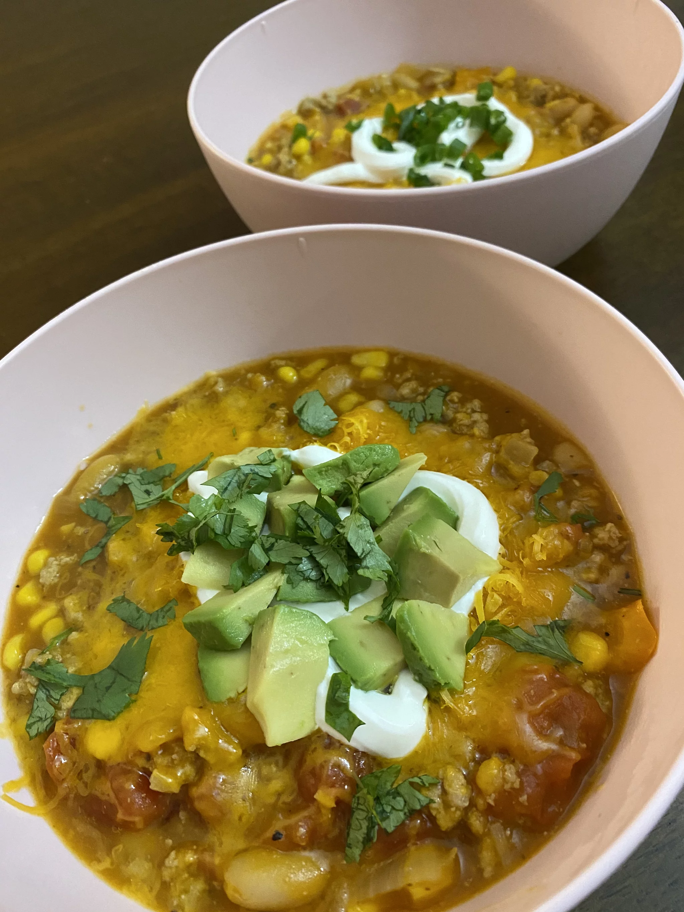

Berti Chilli

Ingredients
- Ground Turkey
- crushed red tomatoes
- chicken broth
- garbanzo beans(i just like em (radda)
- red bell peppers(diced)
- McCormick chilli powder
- Onions
Steps
- cook about 10 ounces of ground turkey
- add onion to your ground turkey as it cooks(if ya like em)
- use a slow cooker
- let it all slow cook for four hours
-